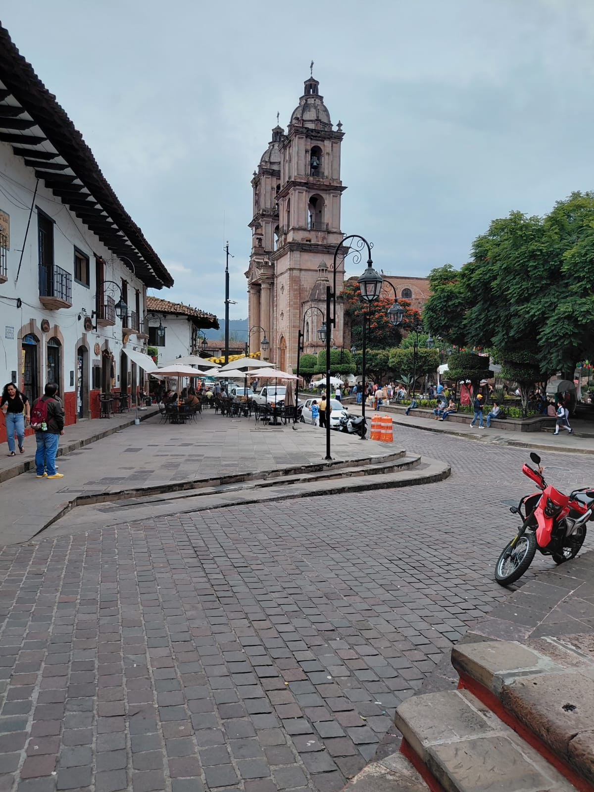

La parroquia de San Francisco se encuerntra registrada en el inventario de monumentos historicos inmuebles del i stituto Nacional de Antropologia e Historia Sus origenes nos remontan al siglo XVI, pese a que ha sido modificada en distintas ocaciones. En los años cuarenta del siglo XX comenzo la construccion de las tres naves y las enormes columnas neoclasicas que blanquean la fachada cada 4 de Octubre se celebra la fiesta en honor a San Francisco de Asis

El Kiosco de Valle de Bravo se encuentra en el jardín central del pueblo mágico, ubicado en la Calle Francisco González Bocanegra, en el Centro, Estado de México.
El kiosco destaca por su arquitectura tradicional y por encontrarse en el centro de un espacio público utilizado para descansar, caminar y reunirse, su presencia forma parte de la imagen característica de la plaza.
El kiosco es uno de los puntos más reconocibles de Valle de Bravo y sirve como referencia para comenzar un recorrido por el centro. Desde allí se pueden visitar los portales, la parroquia y otros sitios tradicionales. Además, el jardín permite observar la vida cotidiana de la comunidad y disfrutar de un ambiente que combina historia, cultura y convivencia.
¿Qué encontrarás en el Kiosco y su plaza?* El corazón del pueblo: Es el punto de reunión principal, rodeado de árboles, bancas de descanso y arquitectura tradicional de estilo colonial.
* Gastronomía local: Alrededor de la plaza hay puestos y neverías tradicionales para comer nieves artesanales, además de restaurantes y cafés.
* Artesanías y ambiente: Es común encontrar venta de artesanías locales, música y un ambiente familiar muy vivo, que se adorna de forma especial durante fiestas patrias u otras temporadas del año.
* Cerca de atractivos: Está muy cerca de la iglesia principal y a pocos minutos caminando hacia el embarcadero y la zona del lago.
Centro de Valle de Bravo, Estado de México El centro de Valle de Bravo es uno de los lugares más representativos del municipio. Se caracteriza por sus calles empedradas, casas de estilo colonial, techos de teja roja y fachadas blancas.